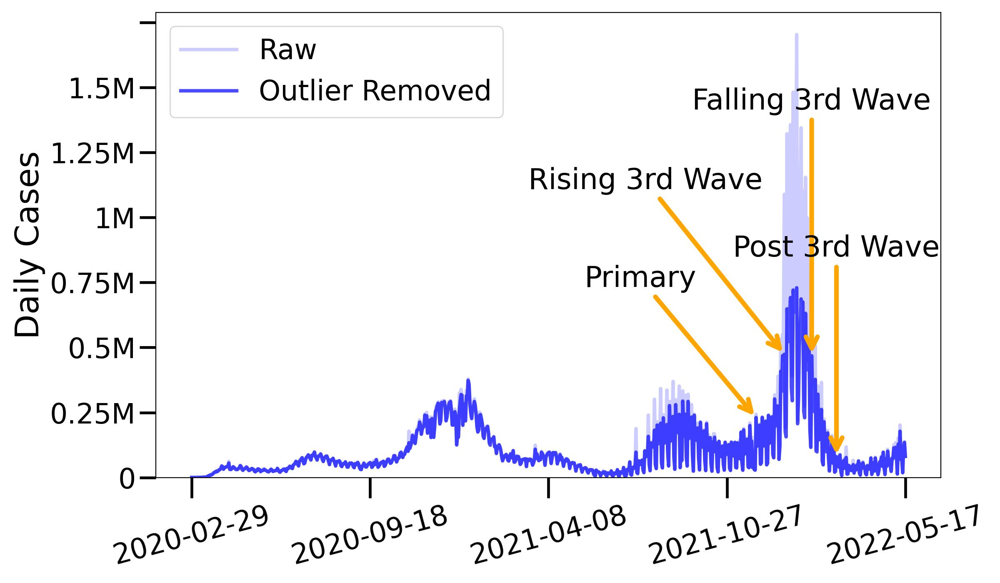

Results#
Results on all 3,142 US counties are listed bellow.
Ground Truth#

Benchmark#
Test result comparison of TFT with five other deep learning models.

Temporal Patterns#
Time series data typically exhibit various temporal patterns, such as trend, seasonal, and cyclic patterns. Here we investigate how well our TFT model can learn and interpret these patterns by conducting experiments on data with these patterns.
Attention weights aggregated by past time index showing high importance in the
same day the previous week(position index -7).
Weekly
seasonalitydue to reporting calculated using auto-correlation at different lag days \(k \in [1, 21]\). Our analysis shows a clear weekly periodicity, where the correlation peaks at lag day k = 7. This is attributed to weekly reporting style from hospitals, leading to less reported cases on weekends.
Cyclicholiday patterns (Thanksgiving, Christmas). During holidays, hospitals and COVID-19 test centers often have reduced staffing and operating hours, leading to fewer tests and reported case. Leading to a drop in attention for those days.
Trend: TFT model’s test performance on all US counties for additional data splits learning different infection trends
Spatial Patterns#
In order to understand how well the TFT extracted spatial patterns from the time series data, we posed these two questions:
Can our model accurately predict Covid-19 infection trends in diverse geographical locations?
How do the attention weights of the model vary across different geographic regions?
By answering these research questions, we gain a better understanding of the model’s behavior in different environments and demographics.
Infection Trends at Different Locations#
To answer the first question, we selected 6 U.S counties at random and plotted their predicted infection trends:

The upper three counties were randomly chosen from the top 100 U.S counties by population, while the lower three counties were randomly chosen from the top 100 US counties from the rest. The image shows that our model was able to accurately predict the infection trends in each of these counties, despite the diverse characteristics and infection rates. Another observation is that despite the population scale differences between the top and bottom counties, our model can accuratly predict the infection trends, indicationg our model can generalize well across different demographic groups.
Attention Focus across Countries#
To answer the second question of how attention weights of the model are affected by different geographical regions, we compare the density maps of cumulative Covid-19 cases countrywide and the corresponding average attentions for each county using the TFT model. We utilize the U.S census bereau’s shape geometry and GeoPandas to plot the map. To enhance visual clarity, we divide the attention weights into for quantiles to highlight the distinct clusters. As seen on the map, it is useful in identifying counties with similar Covid-19 trends and attention weights, providing insight into the model’s performance across various regions.
Spatial distribution of COVID-19 cases in US counties and corresponding attention weights from TFT.
Cumulative COVID-19 cases across US counties

Avg. attention weights across US counties from TFT